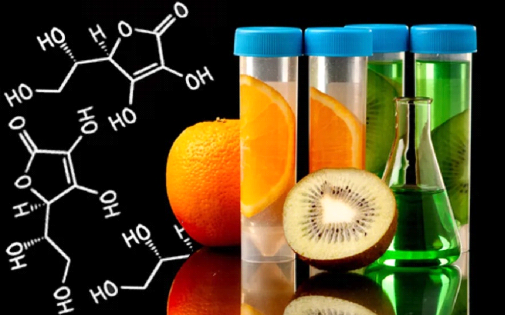

Química nos alimentos
Descubra as reações químicas que acontecem na produção de alimentos
Se você acha que reações químicas acontecem apenas em laboratórios, você está enganado. Aqui você verá que algumas reações estão extremamente presentes nos alimentos.
Segundo a Química dos Alimentos, eles são constituídos basicamente dos seguintes elementos: carbono, hidrogênio, oxigênio, nitrogênio e outros em quantidades menores. Esses elementos unem-se e formam moléculas com funções químicas específicas.
Durante o preparo de vários alimentos é possível perceber diversas reações químicas, como por exemplo no preparo de um bolo, que quando o fermento entra em contato com o calor, por conto dos seus componentes ele faz o bolo crescer.
"Os alimentos industrializados possuem componentes que vão muito além daqueles encontrados naturalmente em nossa alimentação "É importante saber a composição química dos alimentos para entender as informações que os rótulos nos transmitem e assim fazer a melhor escolha entre a infinidade de opções que temos nas prateleiras dos supermercados. Muitas dessas opções, inclusive, usam da propaganda e de um visual bonito e atraente para nos convencer a consumi-las.